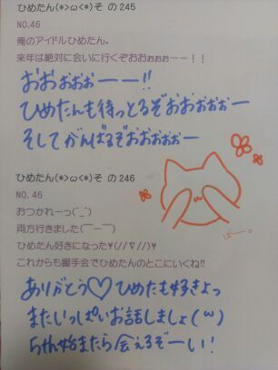

| 2013/03 14 Thu | ひめたん(*>ω<*)そ の269 |
now on "sale" ね...
もういろいろごめんなさい←
あのねー誤字はほんまにわざとじゃないの。
べっ別にみんなにかまってほしくて
わざと間違えるとか
そーゆー魂胆なんてないんだからねっ
ちょっとおっちょこちょいなんだー
てへぺろーとかそーゆーことじゃないんですっ
ひめたんのブログは間違い探しだよーとか
そーゆーアレでもないんですっ
あたしの注意が足りんのです(´・ω・｀)
でもいっつも寝ぼけてるわけじゃ
ないんだけどなーなんでかなー...
...
これからも教えてね。
かまっちょかまっちょ。ふへへ。///
さて、えーとーなんだっけ。あーそうそう
5th single「君の名は希望」デイリー1位 ＊
ありがとうございます(´;ω;`)
いやー嬉しいなーもうっほんとにっ
マネキンの時よりもさらに
たくさんの方が手にとっていただけたかなーと
思ったら嬉しい限りです！
着うたもダウンロードしてみたかな...♪

もういろいろごめんなさい←
あのねー誤字はほんまにわざとじゃないの。
べっ別にみんなにかまってほしくて
わざと間違えるとか
そーゆー魂胆なんてないんだからねっ
ちょっとおっちょこちょいなんだー
てへぺろーとかそーゆーことじゃないんですっ
ひめたんのブログは間違い探しだよーとか
そーゆーアレでもないんですっ
あたしの注意が足りんのです(´・ω・｀)
でもいっつも寝ぼけてるわけじゃ
ないんだけどなーなんでかなー...
...
これからも教えてね。
かまっちょかまっちょ。ふへへ。///
さて、えーとーなんだっけ。あーそうそう
5th single「君の名は希望」デイリー1位 ＊
ありがとうございます(´;ω;`)
いやー嬉しいなーもうっほんとにっ
マネキンの時よりもさらに
たくさんの方が手にとっていただけたかなーと
思ったら嬉しい限りです！
着うたもダウンロードしてみたかな...♪

 ひめたんが二期生に絶対守ってほしい乃木坂内のルールとか有る？
ひめたんが二期生に絶対守ってほしい乃木坂内のルールとか有る？
みんな仲良くすること∩^ω^∩！
もうじき乃木坂には2期生が加入するでしょ。そのタイミングで偽メンバーが混ざってたらひめたんは見抜けるかな？(どっきり企画的なやつ)
そんなひねくれた企画するんなら
罰として加入してもらおうか。にっこり。
ひめたんは普段よく飲む飲み物ってある？
最近はお野菜とかバナナとかを
ミキサーでぐるぐるやっておりますねー
いちごみるく いちごオレ よく飲んでるよー♪
MJ で Perfume に会ったとき
ごあいさつの他にどんなお話したのかな？
あまり時間がなかったからアレだけど
頑張ってねー応援するよーみたいな感じで
言っていただきました(〃ω〃)
今、普通のメロンパンとチョコチップメロンパンのどちらを買おうか迷ってます。
ひめたんに選んでもらいたいんで、ドッチが良いかな？
チョコチップメロンパン！
でもねー実はひめたん
メロンパン好きじゃないんよねーごめんね。ぺろ
何でも一つだけ願いが叶うとしたら、何を願うの？
おやゆび姫になりたい。
こんな寒いときだから？ 海外行くならどこ行きたいですか〜？
ロシアいきたいでーすー冗談でーすっ
飛行機怖いんよね(´・ω・｀)
今朝みたけどミャンマーブームきてるらしいよー
あっすっすー
あ、気温のことはよーわかりませんぬ←
ひめたんは 何か資格とか持ってる？(^O^)
漢検持ってるけど何級か忘れたよー
びーむ師の資格(^O^)
ひめたんは、お部屋の中では何してる？
それはひっみっつー
とかゆって秘密にすることもないけどー
そーだなー知りたいかい？
まあーDVD観て過ごすのが好きかなー
ひめたんのお部屋ってどんな感じですか？
王子さまが迎えに来てくれそうなお部屋
とだけ言っておくから想像してごらん♪笑
あっジャッキーちゃんのぬいぐるみが
いーぱいおるよーん(*^ω^*)
そして今日 3月14日といえば
そうですねホワイトデーですねー
お返し待ってるよーっていやそーじゃなくて
ひめたんが都民になって丸1年*\(^^)/*
これからも初心を忘れず頑張ろうと思いますっ
後輩たちも卒業、受験を終えてね
新たなスタートを切ったのかなーなんてね。
なんかあったらひめ先輩に連絡しなさいねー＊

(＊´・ω・＊)
コメント(141)
2013/03/14 23:06